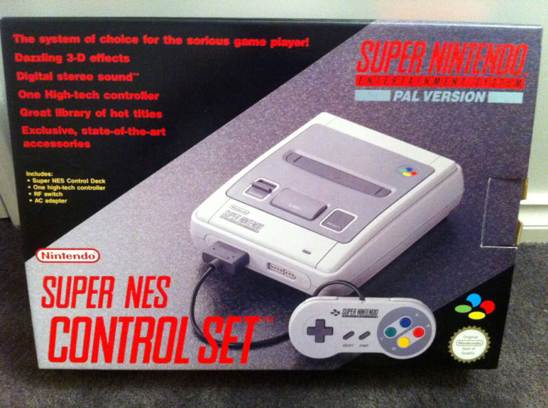

<
La consola que rivalizó directamente con la Mega Drive. Trajo juegos de muchísima calidad y originalidad, y cuanto más tiempo
pasaba, más impresionaron. Su CPU no era la más rápida, pero sus
chips de gráficos y sonido eclipsaron ese inconveniente. Fue un
éxito en todo el mundo, teniendo juegos de la talla de Super Mario World, Street Fighter II, o Donkey Kong Country.
>
